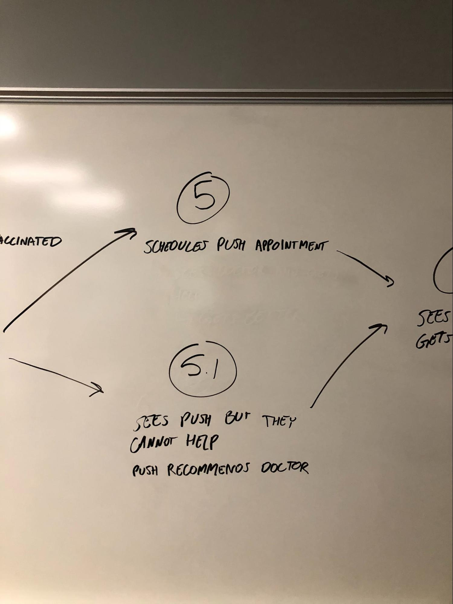
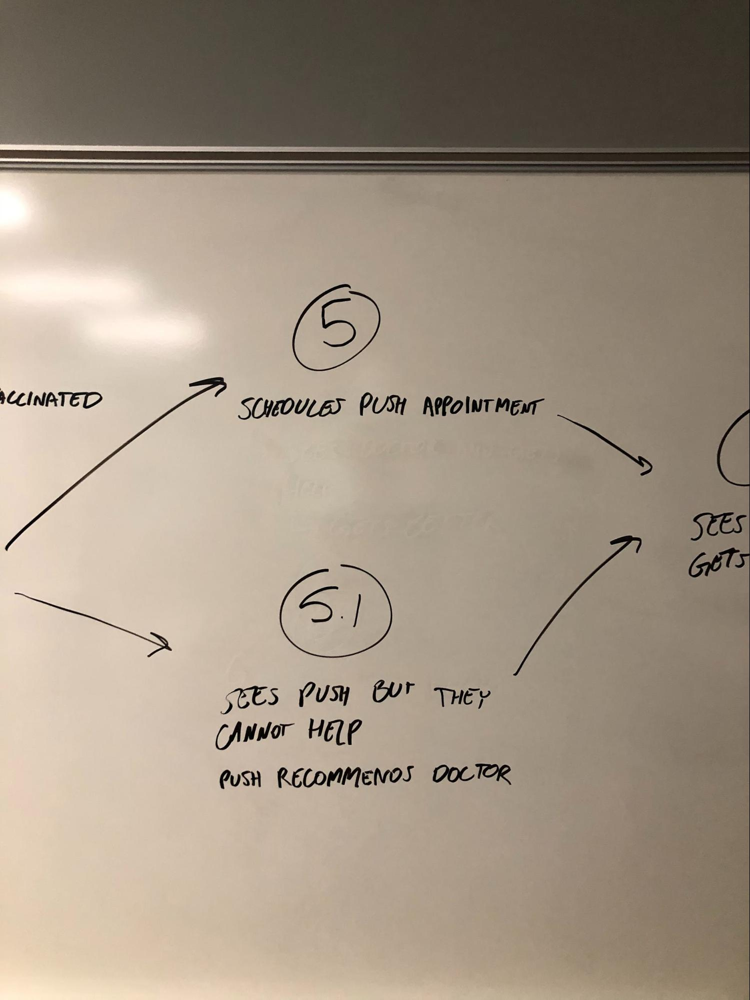

Overview
Context
During the Fall 2019 semester, our Experience Studio team at Purdue University was sponsored by Cerner, a major supplier of information health solutions. This was an open-ended project that allowed us to explore many possible avenues toward a solution.
Objective
With the implementation of new communication technologies in healthcare such as the electronic medical record (EMR), the quality of communication in the healthcare environment has decreased. Therefore, we were encouraged to come up with a streamlined communication channel for patients and healthcare providers. Our intent was to empower patients to take responsibility for their health by helping them gain the support they need from their providers.
Though there were many different directions we could take this project, we decided to focus on encouraging college students to reach out to healthcare resources early with the onset of illness, so that they can be assisted properly through recovery. From personal experience in a university setting, we knew that many students were not satisfied with visits to the on-campus health center, Purdue University Student Health Center (PUSH). This was an area of improvement we identified to help alleviate existing communication problems.
Role
UI / UX Designer
Duration
Fall Semester (August–December 2019)
Team Members
Zoë Morken, Jingle Chen, Anna Ding, Christian Espinoza, Rhea Singh, Alicia Zhang
Tools
Figma, Smaply
Final Deliverables
Design documentation including research and ideation, low to mid-fidelity prototypes
How can we design for preventive, rather than reactive, care? How can students be aware and informed about Purdue’s healthcare resources throughout the entirety of their physical health during college?
Solution
We designed a diagnosis tool to be implemented into PUSH’s patient portal for students to assess whether they should schedule an in-person appointment. This is essentially a computer wizard that asks and adapts questions regarding a user’s current state of health. Once the questionnaire is complete, the tool produces a list of top three most plausible illnesses, with descriptions for each.

Mid-Fidelity Prototype of Friendli.
If the tool does not believe the illness calls for an appointment, students have the option to sign up for emails checking in on the student. These emails will occur at regular intervals (day after, week after, etc.) asking whether the student felt better after following the recommended steps. From this point, students feeling worse over time will have the tool automatically schedule an appointment for them. Students can stop email notifications at any time.

Mid-Fidelity Prototype of a Purdue student’s email inbox. Students are prompted to answer the question for further instruction from our proposed tool.
My Contributions:
- Performed extensive research on current healthcare modes of communication (EMRs) to better inform self and group members and identified areas to explore further as means of tackling different barriers of communication in healthcare
- Established written problem statement for group approved by sponsors
- Ideated constantly throughout shifting problem space, created multiple technological means of communication (e.g. mobile, web) to address different contexts, and built a persona to base our Experience Map on
Exploration Process
Approach
Since the initial problem space that we were working on was extremely broad, narrowing our focus and finding the right problem to solve was an essential part of this project. Our general approach involved narrowing the project scope and picking one of the possible directions informed by our assumptions or research insights, then quickly explore that specific direction. Throughout the process, we presented our ideas to our professors and sponsors for additional feedback.
We looked into three different problems in healthcare regarding the following categories, eventually deciding to look into gaps within the healthcare transition process.
We noticed that college students were the user group most likely to not communicate with healthcare providers on a regular basis. Narrowing further, we looked into the theme of healthcare transition. This is defined as the process of taking care of one's own health-related information and activity.
With the general scope of “healthcare transition,” we gradually modified our scope based on pain points discovered through a survey study and expert interview.
- Encourage college students to ask more questions.
- Help college students onboard into their school's healthcare system.
- Better inform college students on what action to take.
Data Collection
Survey
Our goal in sending out a survey was to get a better understanding of students’ knowledge on healthcare before, during, and after their transition to college (including insurance, medical records, medical history, etc.).
- 51 responses
- 80% female, 20% male
- 18 responses from 18-19 year olds; 27 responses from 20-21 year olds; 6 responses from 21+ year olds
In the survey, we asked our participants to rate themselves on how knowledgeable they are about their medical insurance on a 1 to 5 scale (1 being not knowledgeable and 5 being knowledgeable). The result average was 2.29.
Quotes
"I don't care, I'm pretty healthy."
"I call my parents [if I have a problem]."
Takeaways
We confirmed that not understanding how to seek help from the healthcare system is a problem among college students. More importantly, what makes this issue more severe is that college students don’t recognize it as a problem.
Our survey and results can be accessed here.
Purdue University Student Health Center (PUSH) Interview
To gain more perspective from the provider side of patient–provider communication, we interviewed Gwen Richardson, a nurse practitioner at PUSH. Our interviewee was able to give us a baseline understanding of the inner workings of PUSH and what she feels are barriers when communicating with students.
The interview was more conversation-like, where two team members of our group started from our standard provider interview protocol and inserted follow-up questions when necessary. It was carried out on October 10, 2019 at PUSH within a 30-minute interval.
Interview Takeaways
- Cost is important to students. Both our interviewee and PUSH strive to be honest and upfront about how much an appointment or visitation will cost a student. This is done to prevent surprise bills and claims that students were not informed.
- Students lack proper healthcare knowledge. Richardson mentions that many of the students that come in are unfamiliar with their health insurance. Some students come in not knowing what medication they’re taking (if they are taking medication) or why. Because of this, providers must either search through a student’s medical record for a past diagnosis or contact the patient’s primary doctor.
- Students under-utilize their PUSH patient portal. Each Purdue student automatically has an account, and though providers encourage communication through this channel, students still have not readily adopted this tool. Some students, upon receiving a secure message notification in their email, think that the message is spam or forget about it entirely.
- Since students are unprepared in handling their own healthcare information and activity, they do not speak up even if they may have questions or concerns. This is a pain point for Richardson, as she wants all students to know that PUSH is a safe place where information is confidential. In a university setting, students should feel comfortable sharing health-related concerns and asking questions to help practitioners better understand their situations.
When comparing Richardson’s viewpoints with those of the patients we interviewed, their is an evident difference in mindset leading to a disconnect in straightforward communication. Out of these insights, we found the lack of interaction with the online portal interesting, since it was a technology-forward solution which the younger generation was rejecting. Therefore, our ideation revolved around what we could build off of this existing technology.
Data Analysis
Persona
From collected data, we created a persona to help align our ideas and direct our Experience Map.

Mia
- Out-of-state, first year Purdue student
- Active person; former high school soccer athlete
- Parents take care of her medical information
- Under her parent’s health insurance
After creating Mia, our group whiteboarded a simple map of her experiences related with health and Purdue. The outline has six steps on what Mia experienced. Afterwards, we took these steps to utilize as a guideline for the stages of our experience map.

 



Our team hard at work whiteboarding the experience!
Experience Map
Taking our persona as an inspiration, we decided to create an experience map to show different scenarios students might go through while they are here on campus and need to use PUSH’s services. We focused on five different phases which were pre-college, vaccine, getting sick, getting a severe disease, and post-college.
Finalized Experience Map created with Smaply. Click here to view full version.
During our sponsor meeting, our map was evaluated with the team. They were most interested in the “get sick” stage, so we expanded further on that section using Mia.

Going back to our original Google Sheets file and adding more information to the “Get Sick” phase.
What informed us on this map were the questions and concerns during the early stage of getting sick, such as “What medicine I should take?” “How serious is this?” and “What I can do to recover?.” We summed them up into two major questions:
- What's wrong with me?
- What should I do?
Ideation
Sketching
After doing research to figure out more about our target group and see specifically where the main pain points were, we started ideation. Our more prominent ideas were a medical checklist, medical questionnaire, and PUSH patient portal onboarding.


Whiteboarding
With these three general directions in mind – medical checklist, medical questionnaire, and PUSH patient portal onboarding – we attempted to probe deeper into how Mia would interact if given one of these solutions. The results were negative; because these designs were all very one-sided in terms of interaction, we found that Mia would lose interest in all situations because there was no direct communication element with a provider. Furthermore, the medical checklist and PUSH onboarding solutions were more of a one-time point of contact that did not promote continued usage over our user group’s transition period.
Because of these reasons, we scrapped our ideas and scrutinized the “getting sick” phase of our Experience Map. We ideated again separately, our goal being to break down communication barriers between college patients and providers, and came back together to whiteboard as a group. In doing so, our ideas aligned much better.
Our idea: A tool implemented into the current PUSH portal that would help students determine whether they should schedule an appointment with PUSH. We felt that this addressed our scope because instead of having students worry about their illness by reading online sources – an insight we found from our Experience Map – we would have them initiate the interaction with PUSH from the beginning so that PUSH may assist them through sickness and into recovery.

- Login into the portal and first interactions with the diagnosis tool.
- Results produced and next step options the student can take.
- Notification received from the portal a day after interaction.
- Notification received from the portal a few days after interaction.
Testing
After whiteboarding our final solution, we turned to Figma to create low-fidelity wireframes. These, along with paper prototypes, were used for testing whether our design would address our chosen scope.
Figma Prototype
The goal of testing our Figma wireframes was to gauge people’s understanding and preconceived notions of “wizards” as well as determine whether these solutions would be adopted by our user group.
Takeaways
- Users found that this solution more trustworthy and reliable than searching their symptoms online.
- There was confusion with the layout of the diagnosis page.
- Users wanted a progress bar for the survey to track how their progress.
- Users preferred the term “wizard” over “chatbot.”
Concept Testing – Paper Prototype
A paper prototype was created in order to determine how best to organize our screen for symptom severity (rating the level of severity for each symptom that the patient lists).

Yellow and red paperclips: drag and drop each symptoms you have and rank them in the right order.
Chatbot: question will pop up, the user answers it, and then the next question will pop up right away (asking for severity).
Takeaways
- Participants found using sliders more intuitive.
- Users wanted three levels of severity because they felt that it was easier to rate their level of severity that way.
Final Prototype
Iterations
After presenting our final prototype to our sponsors, we made the following changes:
- Changed severity scale from sliders to numbers to make it easier to use for both the user and computer.
- Sectioned the timeline to better indicate user progress and the amount of questions that remain.
- Added percentages on the diagnoses page to emphasize that tool should be used as a suggestion.
- Hid information away on separate tabs for easy access when the user scrolls down.
- Represented physical feeling with emoticons in the notification email to eliminate potential bias toward picking a certain color.
Next Steps
We had other ideas we would like to explore further for the purposes of this project.
- Journaling: Users would have the option to write down their own thoughts and feelings about their illness when using the tool. From testing, we found that the multiple choice questions could be hindering accurate diagnosis.
- History: The patient and medical practitioner should also be able to see previous use results of the diagnosis tool.
- Driving Tool Usage: Another topic brought up during our meetings was how the diagnosis tool should be introduced. We had ideas on introducing the portal through word of mouth, during PUSH appointments, or through the PUSH website.
Summary and Design Rationale
This diagnosis tool implemented into PUSH’s patient portal is meant for students to make the first steps toward taking care of their health. Our solution encourages enhances patient-provider communication by first getting students comfortable using the portal, then scheduling an appointment when necessary.
Instead of leaving students at a loss of what to do when they get sick, we hoped that our solution would fuel their desire to be more aware of how to take care of themselves during a major transition period (home to college) in their lives.
What I Learned
Open-ended projects such as this require much careful research and planning. Though we were focused on scoping down as soon as possible, our haste ironically led us to wander around the problem space in circles.
After choosing a scope and sticking to it, most of our research was fairly traditional (secondary research, surveys, interviews). If planned better, our group would have hosted a co-design workshop to provide more deeper insights.
Though we experienced setbacks, our group was able to successfully pull together a solution that addressed a real need in our community.
Team Cerner, Fall 2019